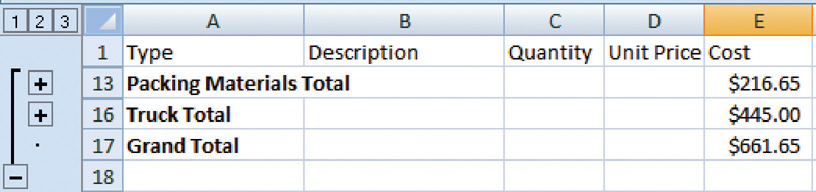
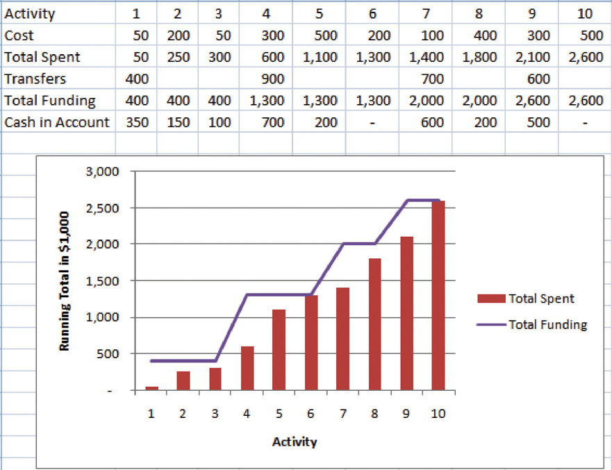

During the conceptual phase when project selection occurs, economic factors are an important consideration when choosing between competing projects. To compare the simple paybacks or internal rates of return between projects, an estimate of the cost of each project is made. The estimates must be accurate enough so that the comparisons are meaningful, but the amount of time and resources used to make the estimates should be appropriate to the size and complexity of the project. The methods used to estimate the cost of the project during the selection phase are generally faster and consume fewer resources than those used to create detailed estimates in later phases. They rely more on the expert judgmentDecisions based on incomplete information made by people who have extensive personal experience. of experienced managers who can make accurate estimates with less detailed information. Estimates in the earliest stages of project selection are usually made using estimates based from previous projects that can be adjusted—scaledMultiplied by an adjustment factor to make the new estimate proportional to the original.—to match the size and complexity of the current project or by applying standardized formulas.
An estimate that is based on other project estimates is an analogous estimateBudget estimate based on a similar project.. If a similar project cost a certain amount, then it is reasonable to assume that the current project will cost about the same. Few projects are exactly the same size and complexity, so the estimate must be adjusted upward or downward to account for the difference. The selection of projects that are similar and the amount of adjustment needed is up to the judgment of the person who makes the estimate. Normally, this judgment is based on many years of experience estimating projects, including incorrect estimates that were learning experiences for the expert.
In the John’s move example, John asked a friend for advice about the cost of his move. His friend replied, “I moved from an apartment a little smaller than yours last year and the distance was about the same. I did it with a fourteen-foot truck. It cost about $575 for the truck rental, pads, hand truck, rope, boxes, and gas.” Because of the similarity of the projects, John’s initial estimate of the cost of the move was less than $700 and he decided that the cost would be affordable and the project could go forward.
Less experienced managers who are required to make analogous estimates can look through the documentation that is available from previous projects. If those projects were evaluated using the Darnall-Preston Complexity Index (DPCI), the manager can quickly identify projects that have similar profiles to the project under consideration even if those projects were managed by other people. Comparing the original estimates with the final project costs on several previous projects with the same DPCI ratings gives a less experienced manager the perspective that it would take many years to acquire by trial and error. It also provides references the manager can use to justify the estimate.
If the project consists of activities that are common to many other projects, average costs are available per unit. For example, if you ask a construction company how much it would cost to build a standard office building, they will ask for the size of the building in square feet and the city in which the building will be built. From these two factors—size and location—the company’s estimator can predict the cost of the building. Factors like size and location are parametersMeasurable factors that can be used in an equation to calculate a result.—measurable factors that can be used in an equation to calculate a result. The estimator knows the average cost per square foot of a typical office building and adjustments for local labor costs. Other parameters such as quality of finishes are used to further refine the estimate. Estimates that are calculated by multiplying measured parameters by cost-per-unit values are parametric estimatesEstimates that are calculated by multiplying measured parameters by cost-per-unit values..
To estimate the size of the truck needed for John’s move, the parameter used by a truck rental company is the number of bedrooms, as shown below.
Figure 9.1 Number of Bedrooms Used for Parametric Cost Estimate

The moving company assumes that the number of bedrooms is the important parameter in determining how big a truck is needed for a move. For John’s move, he has a one-bedroom apartment, so he chooses the fourteen-foot truck. Once the size is determined, other parameters, such as distance and days, are used to estimate the cost of the truck rental.
Once the project is selected, more accurate estimates are often needed to raise funds and agree on contracts with vendors in the initiation phase.
John recalled that his friend also told him how tiring it was to do all the packing, loading, and driving himself, and some items were damaged when the load shifted inside the truck during the trip. John decides to call in favors from two friends, Dion and Carlita, to help him pack in Chicago and to hire some of the skilled labor like that needed to load the truck properly.
If services or products will be provided by vendors, the cost of those services can be determined by issuing a request for proposal (RFP)Requires a bidder to offer solutions and ideas on how to perform the scope of work and a price for performing that work.. The RFP describes the work, service, or product to be provided by the vendor and the quality level required. The RFP is sent to a list of vendors who are qualifiedMeets a standard of reliability and capability.—meet standards of reliability and capability—to perform this type of work. They respond with a proposal for completing the work described in the RFP, including an estimate of the cost. Some government organizations are required to use the qualified vendor with the lowest bid. Other organizations are not bound to take the lowest bid but are usually required to justify their reasons for not doing so.
John wants to find out how much it would cost to hire a skilled crew to load and secure the furniture in the truck and then have another crew from the same company meet him in Atlanta to unload the truck and help him unpack. He is not sure if any companies offer this option, so he decides to ask three moving companies for bids. He also decides to ask for bids on a standard move that includes all phases of packing, loading, transportation, and unloading as a comparison to see if his cost-saving plan is worth the extra effort.
The project management team can review the responses by several vendors to the RFP to determine if their estimate of the cost of that aspect of the project is close to the estimate made during the project selection stage. If the estimates by the vendors are much higher than expected, and if the project cannot be completed for the cost that was used to select the project, the selection decision might have to be reconsidered. Reconsidering the selection of the project should take into consideration the economic ratings of the competing projects that were not chosen and who the project champions are for the projects that would be affected.
Some vendors may suggest an alternative way to meet the objective of the RFP in a more cost-effective manner that does not match the specifics of the RFP. Such alternatives can reduce costs if they are acceptable.
The most accurate and time-consuming estimating method is to identify the cost of each item in each activity of the schedule, including labor and materials. If you view the project schedule as a hierarchy where the general descriptions of tasks are at the top and the lower levels become more detailed, finding the price of each item at the lowest level and then summing them to determine the cost of higher levels is called bottom-up estimatingSumming of estimates of each detail of the activity and project..
After evaluating the bids by the moving companies, John decides the savings are worth his time if he can get the packing done with the help of his friends. He decides to prepare a detailed estimate of costs for packing materials and use of a rental truck. He looks up the prices for packing materials and truck rental costs on company Web sites and prepares a detailed list of items, quantities, and costs, as shown below.
Figure 9.2 Detailed Cost Estimate

This type of estimate is typically more accurate than an analogous or parametric estimate. In this example, the sum of packing materials and truck expenses is estimated to be $661.25.
The detail can be rolled upSubtotaled.—subtotaled—to display less detail. This process is made easier using computer software. On projects with low complexity, the cost estimates can be done on spreadsheet software.
For example, the subtotal feature could be used in Excel and collapsed to show the subtotals for the two categories of costs, as shown below.
Figure 9.3 Sum of Detailed Costs by Type
On larger projects, software that manages schedules can also manage costs and display costs by activity and by category.
An activity can have costs from more than one vendor plus costs for labor and materials from internal sources. Detailed estimates from all sources can be reorganized so those costs that are associated with a particular activity can be grouped by adding the activity code to the detailed estimate, as shown in Figure 9.4 "Detailed Costs Associated with Activities".
Figure 9.4 Detailed Costs Associated with Activities

The detailed cost estimates can be sorted by activity and then subtotaled by activity to determine the cost for each activity.
Once the cost of each activity is estimated, it is possible to determine how much money is needed for each group of tasks and for the whole project.
The cost of each group of activities of the project can be estimated by summing the costs of the components of each activity in the group. This process of subtotaling costs by category or activity is called cost aggregationSum of component costs..
Because the costs are associated with activities and each activity has a start date and a duration, it is possible to calculate how much money needs to be spent by any particular date during the project. The money needed to pay for a project is usually transferred to the project account shortly before it is needed. These transfers must be timed so that the money is there to pay for each activity without causing a delay in the start of the activity. If the money is transferred too far in advance, the organization will lose the opportunity to use the money somewhere else, or they will have to pay unnecessary interest charges if the money is borrowed. A schedule of money transfers is created that should match the need to pay for the activities. The process of matching the schedule of transfers with the schedule of activity payments is called reconciliationMatching funds provided with funds spent.. Refer to Figure 9.5 "Fund Transfers and Expenditures" that shows the costs of ten major activities in a project. Funds are transferred into the project account four times. Notice that during most of the project, there were more funds available than were spent except at activity 6 when all the available funds were spent.
Figure 9.5 Fund Transfers and Expenditures
In the project budget profile shown in Figure 9.5 "Fund Transfers and Expenditures", there is no margin for error if the total of the first six activities exceeds the amount of funding at that point in the project.
Contractual agreements with vendors often require partial payment of their costs during the project. Those contracts can be managed more conveniently if the unit of measure for partial completion is the same as that used for cost budgeting. For example, if a contractor is pouring concrete for a large project, their contract may call for partial payment after 25 percent of the total volume of concrete is poured as determined by cubic yards of concrete.
Estimates
Consider a project in which you have been involved that used an estimating technique to provide numbers for the conceptual plan. Briefly describe the type of project and identify the estimating method used.